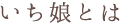
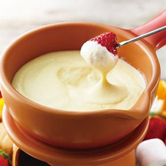
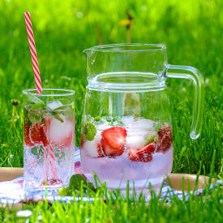
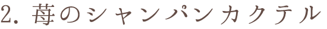
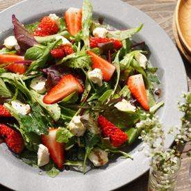
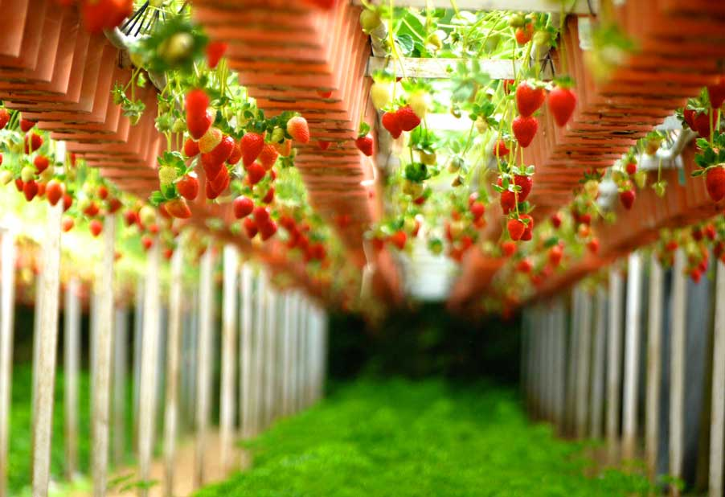
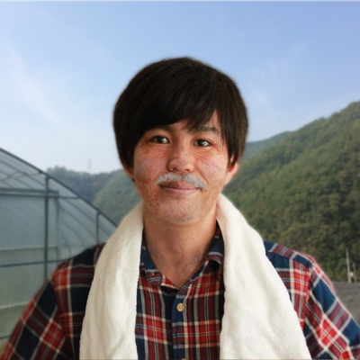
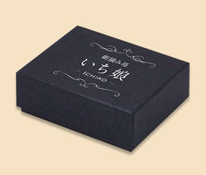
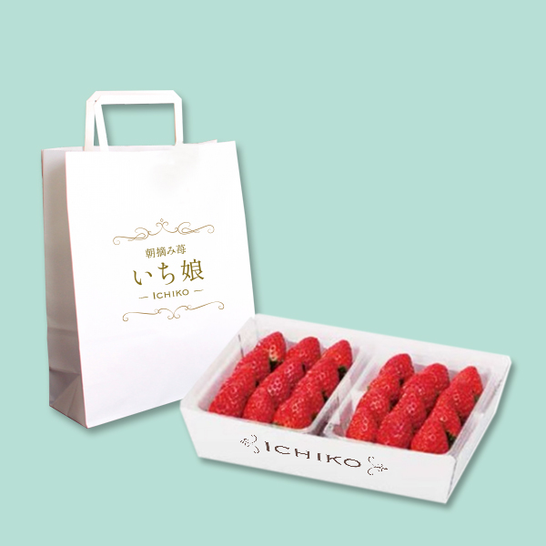
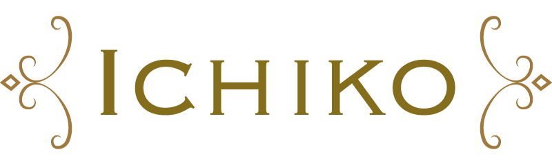

いち娘は2020年に福岡県立川市で生まれた幻の苺。
改良を繰り返し、摘みたてのみずみずしさを届けられるよう繊細な温度管理と水分管理によって高品質の苺を栽培しています。
まごころ込めて育てた苺は愛娘といっても過言ではない！という私たちの気持ちから
いちごの「いち」と愛娘の「娘」を取って「いち娘」と名付けました。

贈り物にはもちろん、有機栽培だからこそできるアレンジ法をご紹介致します。

ホームパーティーにおすすめ！
苺の甘みとチーズの塩味がやみつきになります。
【POINT】
チーズはゴーダチーズ、カマンベールチーズが良く合います！


女子会支持率No.1
見た目も華やかな上に美肌効果も期待できます。
【POINT】
ノンアルコールならジンジャーエールがおすすめ。

サラダに苺をまるごとトッピング！
バルサミコ酢のドレッシングがよく合います。
【POINT】
ルッコラ、ベビーリーフ、生ハム等と一緒に、テーブル上を華やかに演出。

苺と共に人生を歩んできた匠が丹精込めて作る、それが朝摘み苺の「いち娘」

苺農家に生まれ、栽培に関わること３０年。
知り得た技術を広めるために、地域の苺農家の指導員として活動をしてきました。
匠が研究と改良を繰り返し、長い歳月を経て完成したのが朝摘み苺「いち娘」です。
贈り物としてはもちろん、ご自身へのご褒美、ご自宅でのお料理にと購入されるリピーターのお客様も多くいらっしゃいます。
ぜひこの機会にご賞味ください！

| 商品名 | 朝摘み苺 いち娘 |
|---|---|
| 内容量 | 1パック12粒 |
| 価格 | 5000円（税込） |
| 賞味期限 | 発送日より4日程度 |

| 商品名 | 朝摘み苺 いち娘 （簡易パッケージ） |
|---|---|
| 内容量 | 1パック12粒 |
| 価格 | 4500円（税込） |
| 賞味期限 | 発送日より4日程度 |
